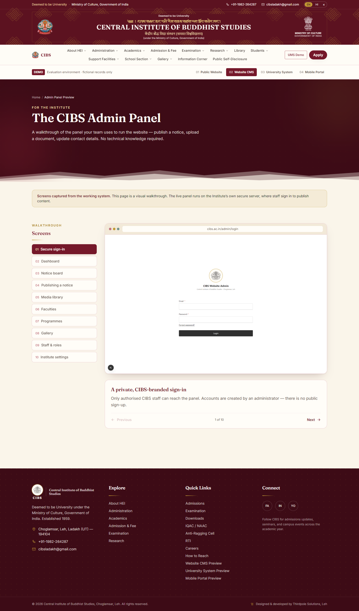

Buyer-facing intake
A product-specific RFQ route with required fields, attachments and qualification rules.
Export, catalogue and RFQ systems
For manufacturers and exporters whose sales teams repeatedly clarify specifications, reconstruct quotations or lose context between website enquiries and internal follow-up.
Possible system
The system can sit beside an existing website or CRM and improve only the steps that currently lose time and context.
Products, variants, technical files and buyer-ready context.
Required specifications, quantity, destination and attachments.
Ownership, clarification status, quotation history and next action.
Reusable pricing inputs, terms and versioned outputs.
Accepted scope passed to fulfilment without rebuilding the record.
Source, response time, conversion and recurring demand signals.
Bounded initial pilot
Prove that structured enquiries improve response quality before connecting the full catalogue or production workflow.
A product-specific RFQ route with required fields, attachments and qualification rules.
A queue for ownership, clarification, technical input and quotation status.
Compare complete-enquiry rate, first-response time and quotation turnaround.
Adjacent interface evidence
The CIBS administration prototype is from a different domain, but demonstrates the interface approach used for structured records, role-specific actions and operational visibility.

This is relevant evidence of interface and workflow implementation, not a claim of a completed export or RFQ client project.
Typical engagement
| RFQ workflow diagnostic | Sales handoff map, data model and pilot plan | INR 30,000-60,000 |
| Product-family pilot | Structured intake, internal queue and reporting | INR 125,000-350,000 |
| Catalogue or CRM integration | Migration, integrations and production expansion | Quoted after pilot |
Indicative planning ranges only. Product complexity, quotation logic, languages, CRM access and catalogue migration determine final scope.
Useful first message
Remove confidential pricing if needed. The sequence of questions and handoffs is enough for an initial review.